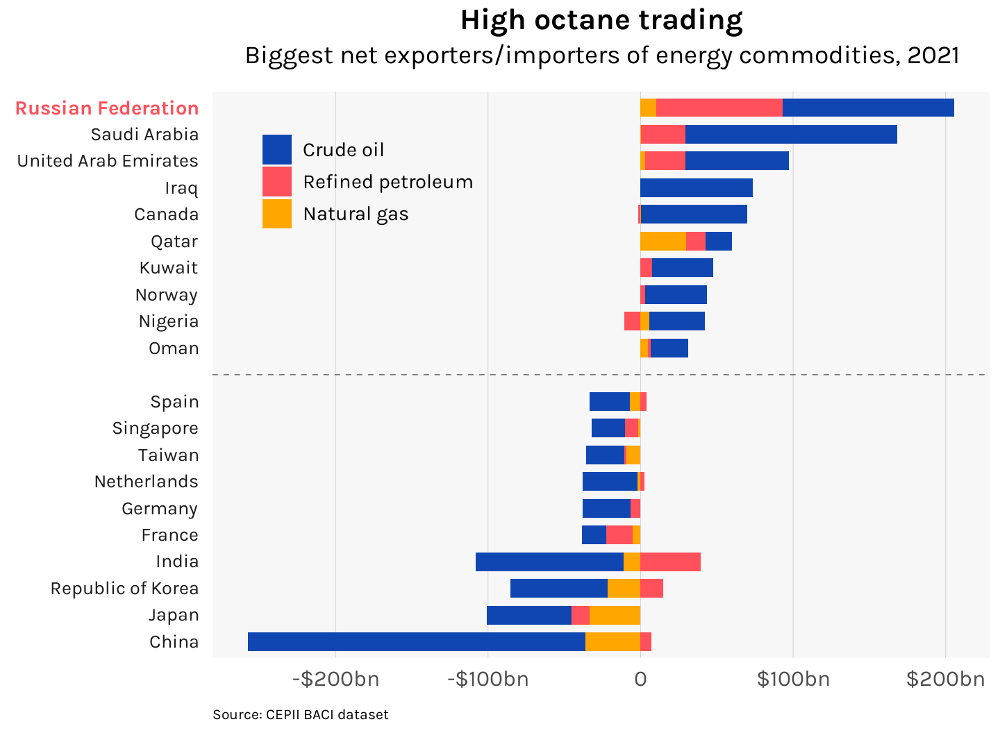
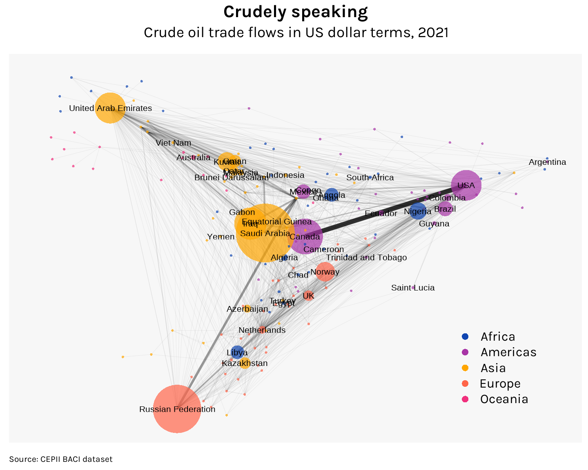
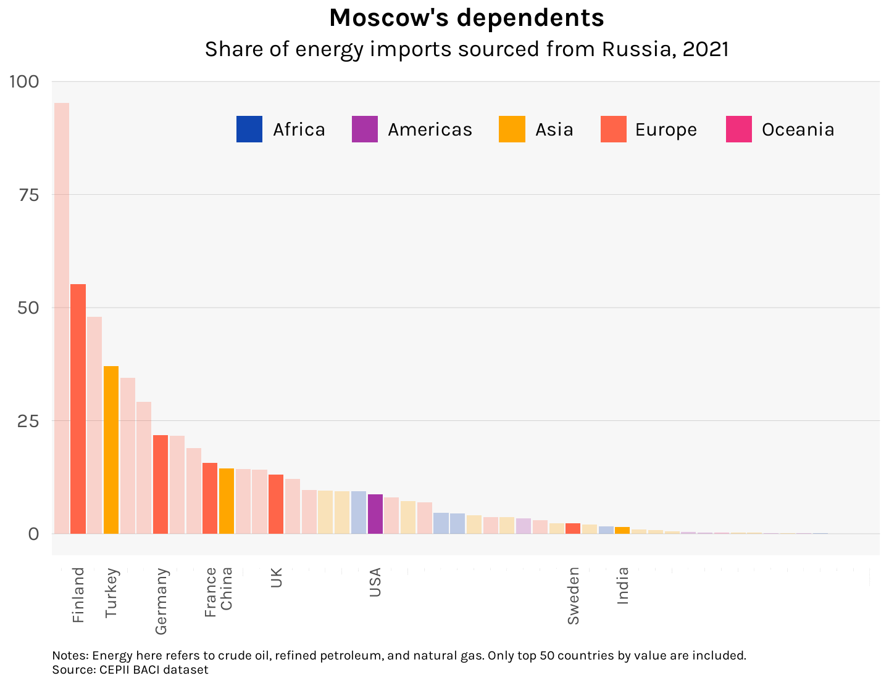

A newly released dataset lets us visualize the patterns of global trade on the eve of Russia’s invasion of Ukraine
Putin’s war in Ukraine is now approaching its second year. In the face of Russia’s armies, Ukraine has confounded pessimists to contrive one unexpected success after another, from the repulsion of the initial invasion of Kiev to the retaking of territories around Kharkiv and Kherson late last year. The West has rallied behind Zelensky. Many geopolitical givens have been upended. John Mearsheimer has changed his mind (just kidding).
Equally bewildering has been the conflict’s economic consequences. Energy commodity prices—crude oil, natural gas—went haywire last year. This joined hands with the great post-COVID reopening to unleash the highest rates of inflation the West has seen since the 70s. In response, central banks have decisively and jarringly ended the low-interest rate era. Recessions loom. Big and small implosions have occurred in the tech–crypto–meme stock space.
This is a lot to make sense of, but in today’s post, I want to focus on Russia’s centrality in the global energy trade. Earlier this month, the French think tank CEPII released the BACII dataset for 2021. The BACII is an extremely rich (and free!) dataset containing bilateral trade flows among 200-plus countries across 5000-plus products. It is a cleaned up version of the UN’s COMTRADE, hence the one-year lag in its release. What we therefore have is the global structure of trade right before the Russian invasion of Ukraine, after which Western sanctions dramatically altered trade patterns. How big of a player was Russia in energy markets?
Let’s load it up:
library(tidyverse)
df <- read_csv("BACI_HS17_V202301/BACI_HS17_Y2021_V202301.csv")
df %>% head() %>% knitr::kable(align = "c")| t | i | j | k | v | q |
|---|---|---|---|---|---|
| 2021 | 4 | 24 | 382499 | 52.548 | 13.235 |
| 2021 | 4 | 24 | 392410 | 0.266 | 1.854 |
| 2021 | 4 | 24 | 481890 | 0.041 | 0.022 |
| 2021 | 4 | 24 | 570232 | 0.202 | 1.854 |
| 2021 | 4 | 24 | 690722 | 3.431 | 1.854 |
| 2021 | 4 | 24 | 732310 | 0.020 | 1.854 |
As you can see, the structure of the dataset is very simple. Column i is the exporting country, j is the importing country, k is the HS six-digit commodity code, v is the annual value of the trade in millions of US dollars, and q is the annual quantity of the trade in metric tons. The 2021 release has *counts fingers* 11.1 million rows.
Accompanying dictionaries define the country and product codes. We’ll go ahead and revise some of the more unusually labeled countries. In particular, note that “Other Asia, not elsewhere specificied” is essentially a euphemism for Taiwan. The result is as follows:
countries <- read_csv("BACI_HS17_V202301/country_codes_V202301.csv") %>%
select(code = country_code, country = country_name_full, iso3 = iso_3digit_alpha)
# Revise names
countries$country[which(countries$country == "France, Monaco")] <- "France"
countries$country[which(countries$country == "Norway, Svalbard and Jan Mayen")] <- "Norway"
countries$country[which(countries$country == "United Kingdom")] <- "UK"
countries$country[which(countries$country == "USA, Puerto Rico and US Virgin Islands")] <- "USA"
countries$iso3[which(countries$country == "Other Asia, not elsewhere specified")] <- "TWN"
countries$country[which(countries$country == "Other Asia, not elsewhere specified")] <- "Taiwan"
countries %>% head() %>% knitr::kable(align = "clc")| code | country | iso3 |
|---|---|---|
| 4 | Afghanistan | AFG |
| 8 | Albania | ALB |
| 12 | Algeria | DZA |
| 16 | American Samoa | ASM |
| 20 | Andorra | AND |
| 24 | Angola | AGO |
The key energy commodities I want to highlight are crude oil, refined petroleum, and natural gas. These have HS codes 270900, 271000, and 271111, respectively. Below are their full labels according to the products dictionary:
read_csv("BACI_HS17_V202301/product_codes_HS17_V202301.csv") %>%
filter(code %in% c(270900, 271000, 271111)) %>%
knitr::kable()| code | description |
|---|---|
| 270900 | Oils: petroleum oils and oils obtained from bituminous minerals, crude |
| 271000 | Petroleum oils and oils from bituminous minerals, not crude: preparations n.e.c. containing by weight 70% or more of petroleum oils or oils from bituminous minerals: these being the basic constituents of the preparations: waste oils |
| 271111 | Petroleum gases and other gaseous hydrocarbons: liquefied, natural gas |
Let’s aggregate the BACII dataset to reflect the total exports and imports of all countries for each of these three energy products.
energy <- df %>%
filter(k %in% c(270900, 271000, 271111))
energy_exp <- energy %>%
group_by(i, k) %>%
summarize(exports = sum(v)) %>%
ungroup() %>%
left_join(countries, by = c("i" = "code")) %>%
select(country, iso3, k, exports)
energy_imp <- energy %>%
group_by(j, k) %>%
summarize(imports = sum(v)) %>%
ungroup() %>%
left_join(countries, by = c("j" = "code")) %>%
select(country, iso3, k, imports)
energy_agg <- energy_exp %>%
left_join(energy_imp) %>%
replace_na(list(exports = 0, imports = 0)) %>%
mutate(net_exports = exports - imports)The graph below shows the biggest net exporters and net importers.
library(ggplot2)
top_countries <- energy_agg %>%
group_by(country) %>%
summarize(net_exports = sum(net_exports)) %>%
ungroup() %>%
arrange(-net_exports) %>%
slice(c(1:10, (n()-9):n())) %>%
bind_rows(tibble(country = "", net_exports = 0)) %>%
arrange(-net_exports) %>%
magrittr::use_series(country)
energy_agg %>%
bind_rows(tibble(country = "", k = "270900", net_exports = 0)) %>%
filter(country %in% top_countries) %>%
arrange(-net_exports) %>%
mutate(country = factor(country, rev(top_countries))) %>%
ggplot(aes(x = net_exports, y = country, fill = k)) +
geom_bar(position = "stack", stat = "identity", width = .7) +
geom_hline(yintercept = "", linetype = "dashed", color = "gray40", linewidth = .25) +
# Labels
labs(title = "High octane trading",
subtitle = "Biggest net exporters/importers of energy commodities, 2021",
caption = "Source: CEPII BACI dataset") +
scale_x_continuous(labels = c("-$200bn", "-$100bn", "0", "$100bn", "$200bn"),
breaks = c(-200, -100, 0, 100, 200) * 10^6) +
scale_fill_manual(labels = c("Crude oil", "Refined petroleum", "Natural gas"),
values = c("#1046b1", "#ff505b", "#ffa600")) +
theme_minimal(base_family = "karla") +
theme(plot.title = element_text(size = 16, face = "bold", hjust = .5),
plot.subtitle = element_text(size = 14, hjust = .5, margin = margin(b = 12)),
plot.caption = element_text(size = 8, hjust = 0, margin = margin(t = 10, l = -10)),
axis.ticks = element_blank(),
axis.title = element_blank(),
axis.text.x = element_text(size = 12, margin = margin(t = 5)),
axis.text.y = element_text(size = c(rep(10, 20), 11),
face = c(rep("plain", 20), "bold"),
color = c(rep("gray10", 20), "#ff505b"),
margin = margin(r = 5)),
legend.position = c(.2, .85),
legend.background = element_blank(),
legend.title = element_blank(),
legend.text = element_text(size = 11),
panel.background = element_rect(fill = "gray97", color = NA),
panel.grid.major.x = element_line(linewidth = .15, color = "gray80"),
panel.grid.major.y = element_blank(),
panel.grid.minor.x = element_blank(),
panel.grid.minor.y = element_blank())
In net value terms for the commodities in question, Russia was the biggest exporter in 2021. Receipts from these would finance its war the following year and have naturally become the primary targets of Western sanctions. Over on the other end, the pronounced reliance of Chinese industry on energy imports adds another strategic reason why the Xi–Putin friendship would continue to have “no limits”.
A visually striking way to represent the structure of global energy flows and Russia’s place in it is through a network chart. Making these is a little trickier than your run-of-the-mill line or bar chart, so I’ll walk through the preparation our data needs to undergo.
Let’s use crude oil (HS 270900). We will need to construct a table containing all the “nodes” (and their properties) and all the “edges” that connect the nodes. In our case, nodes refer to countries while edges refer to the dollar amounts of crude oil flowing from one country to another.
Starting with the nodes:
energy_trunc <- energy %>%
filter(k == 270900)
sources <- energy_trunc %>%
distinct(i) %>%
rename(code = i)
destinations <- energy_trunc %>%
distinct(j) %>%
rename(code = j)
tot_exports <- energy %>%
filter(k == 270900) %>%
group_by(i) %>%
summarize(tot_exports = sum(v)) %>%
ungroup()
nodes <- full_join(sources, destinations) %>%
inner_join(countries, by = "code") %>%
left_join(tot_exports, by = c("code" = "i")) %>%
replace_na(list(tot_exports = 0)) %>%
mutate(id = 1:n(),
label = ifelse(tot_exports >= 10^6, country, "")) %>% # Labels only for big nodes
select(id, code, iso3, country, label, tot_exports)
# Add region of each country
nodes <- nodes %>%
mutate(region = countrycode::countrycode(nodes$iso3, origin = "iso3c", destination = "continent"))
nodes %>% head() %>% knitr::kable(align = "c")| id | code | iso3 | country | label | tot_exports | region |
|---|---|---|---|---|---|---|
| 1 | 4 | AFG | Afghanistan | 50582.04 | Asia | |
| 2 | 8 | ALB | Albania | 208037.64 | Europe | |
| 3 | 12 | DZA | Algeria | Algeria | 10950655.07 | Africa |
| 4 | 24 | AGO | Angola | Angola | 27575679.32 | Africa |
| 5 | 31 | AZE | Azerbaijan | Azerbaijan | 13330215.35 | Asia |
| 6 | 32 | ARG | Argentina | Argentina | 1187448.54 | Americas |
Each node is indexed by the id variable and has two properties that we will later incorporate in our network chart: total exports, which will determine the size of the node, and geographic region, which will determine the color of the node. Regions are obtained from the package countrycode.
Now for the edges:
edges <- energy_trunc %>%
left_join(nodes, by = c("i" = "code")) %>%
rename(from = id) %>%
left_join(nodes, by = c("j" = "code")) %>%
rename(to = id) %>%
select(from, to, v)
edges %>% head() %>% knitr::kable(align = "c")| from | to | v |
|---|---|---|
| 1 | 62 | 50581.430 |
| 1 | 132 | 0.605 |
| 2 | 27 | 1.059 |
| 2 | 62 | 26900.309 |
| 2 | 123 | 181136.270 |
| 3 | 7 | 114354.978 |
The edges table uses the id index from the nodes table to record flows between nodes.
Using the tidygraph package, our nodes and edges tables are now fed into the tbl_graph() function
We are now ready to produce a network chart using the ggraph package. I use the dh layout in the chart below, which implements the Davidson–Harel algorithm to position the nodes of the network. Because some randomness is involved, it is helpful to set a seed so that the result stays fixed as we iterate through drafts of the graph.
library(ggraph)
library(scales)
set.seed(4146)
ggraph(network, layout = "dh") +
geom_edge_link(aes(alpha = v, width = v), show.legend = FALSE) +
geom_node_point(aes(color = region),
size = rescale(nodes$tot_exports, c(.75, 25)),
shape = 16, alpha = 0.7) +
labs(title = "Crudely speaking",
subtitle = "Crude oil trade flows in US dollar terms, 2021",
caption = "Source: CEPII BACI dataset") +
geom_node_text(aes(label = label), size = 8/.pt) +
scale_x_continuous(limits = c(-50, 45)) +
scale_y_continuous(limits = c(-65, 45)) +
scale_edge_width(range = c(0.2, 2)) +
scale_edge_alpha(range = c(0.05, .8)) +
scale_color_manual(values = c("#1046b1", "#a835a6", "#ffa600", "#ff6549", "#f0307d")) +
guides(color = guide_legend(keyheight = unit(1, "lines"),
direction = "vertical",
override.aes = list(size = 2.5, alpha = 1))) +
theme_minimal(base_family = "karla") +
theme(plot.title = element_text(size = 16, face = "bold", hjust = .5),
plot.subtitle = element_text(size = 14, hjust = .5, margin = margin(b = 12)),
plot.caption = element_text(size = 8, hjust = 0, margin = margin(t = 10, l = -10)),
axis.title = element_blank(),
axis.text = element_blank(),
legend.position = c(.85, .2),
legend.background = element_blank(),
legend.title = element_blank(),
legend.text = element_text(size = 12),
legend.key = element_blank(),
panel.background = element_rect(fill = "gray97", color = NA),
panel.grid.major.x = element_blank(),
panel.grid.major.y = element_blank(),
panel.grid.minor.x = element_blank(),
panel.grid.minor.y = element_blank())
The centrality of Russia is evident, making efforts to rapidly disentangle it from supply networks a daunting task. If it can be done at all, it will have to be done gradually, with plenty of near-term pain.
Countries have had to bear this pain unevenly. The chart below shows the share of Russia in countries’ imports of crude oil, refined petroleum, and natural gas. I have highlighted some of the key geopolitical players in the present Ukraine conflict.
highlight <- c("USA", "Germany", "France", "UK", "Sweden", "Finland", "Turkey", "China", "India")
from_russia <- energy %>%
filter(i == 643) %>%
group_by(j) %>%
summarize(from_russia = sum(v)) %>%
ungroup()
tot_imports <- energy %>%
group_by(j) %>%
summarize(tot_imports = sum(v)) %>%
ungroup()
russia_dependence <- from_russia %>%
left_join(tot_imports) %>%
left_join(countries, by = c("j" = "code")) %>%
mutate(russia_dependence = 100 * from_russia / tot_imports) %>%
arrange(-tot_imports) %>%
slice(1:50) %>%
arrange(-russia_dependence) %>%
mutate(country = factor(country, country),
region = countrycode::countrycode(iso3, origin = "iso3c", destination = "continent"),
labelsize = ifelse(country %in% highlight, 10, 0),
highlight = ifelse(country %in% highlight, 1, 0)) %>%
select(code = j, iso3, country, region, from_russia, tot_imports, russia_dependence, labelsize, highlight)
russia_dependence %>%
ggplot(aes(x = country, y = russia_dependence, fill = region, alpha = highlight)) +
geom_bar(stat = "identity") +
labs(title = "Moscow's dependents",
subtitle = "Share of energy imports sourced from Russia, 2021",
caption = "Notes: Energy here refers to crude oil, refined petroleum, and natural gas. Only top 50 countries by value are included.\nSource: CEPII BACI dataset") +
scale_fill_manual(values = c("#1046b1", "#a835a6", "#ffa600", "#ff6549", "#f0307d")) +
scale_alpha(range = c(.25, 1)) +
guides(fill = guide_legend(direction = "horizontal"),
alpha = FALSE) +
theme_minimal(base_family = "karla") +
theme(plot.title = element_text(size = 16, face = "bold", hjust = .5),
plot.subtitle = element_text(size = 14, hjust = .5, margin = margin(b = 12)),
plot.caption = element_text(size = 8, hjust = 0, margin = margin(t = 10, l = -10)),
axis.ticks = element_blank(),
axis.title = element_blank(),
axis.text.x = element_text(size = russia_dependence$labelsize,
angle = 90, hjust = 1, vjust = .5, margin = margin(t = 5)),
axis.text.y = element_text(size = 12, margin = margin(r = 5)),
legend.position = c(.2, .85),
legend.justification = c(0, 0),
legend.background = element_blank(),
legend.title = element_blank(),
legend.text = element_text(size = 12, margin = margin(r = 10)),
panel.background = element_rect(fill = "gray97", color = NA),
panel.grid.major.x = element_blank(),
panel.grid.major.y = element_line(linewidth = .15, color = "gray80"),
panel.grid.minor.x = element_blank(),
panel.grid.minor.y = element_blank())
The fruits of Germany’s enthusiastic rapproachment with Russia had, by 2021, translated into a dependence on Russian energy that exceeded France and the UK. It has unsurprisingly dragged its feet in providing military aid to Ukraine. But even higher was Finland’s, which in contrast has opted to irrevocably defy Moscow by moving to join NATO. This after decades of steadfast neutrality, demonstrating how past alignments can shift—and have shifted—dramatically.
Germany’s Ostpolitik was rooted in the reasonable notion that deepening economic links can only make state relations more peaceful, more constructive. And in terms of global energy markets, Russia was as embedded as it gets. But Putin in his insanity chose to throw this all away and wage a war of annihilation. That this would have been hard to fathom from the vantage point of 2021 holds sobering implications for whether peace will endure among the great powers in the future.
Text and figures are licensed under Creative Commons Attribution CC BY-SA 4.0. The figures that have been reused from other sources don't fall under this license and can be recognized by a note in their caption: "Figure from ...".